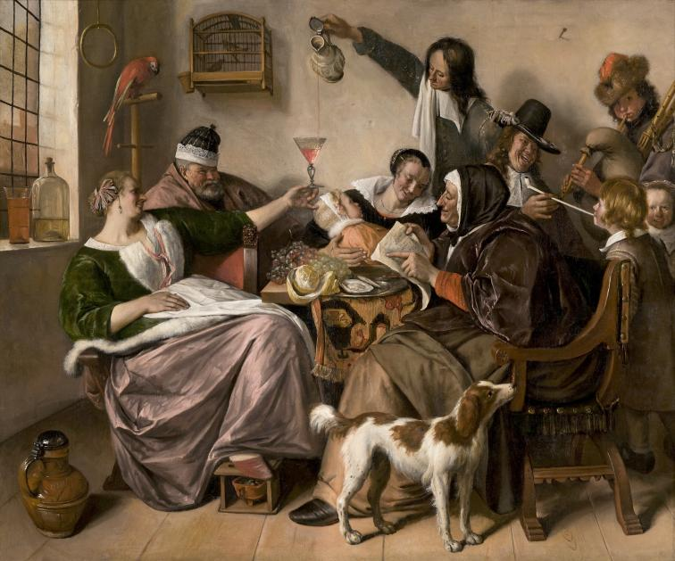
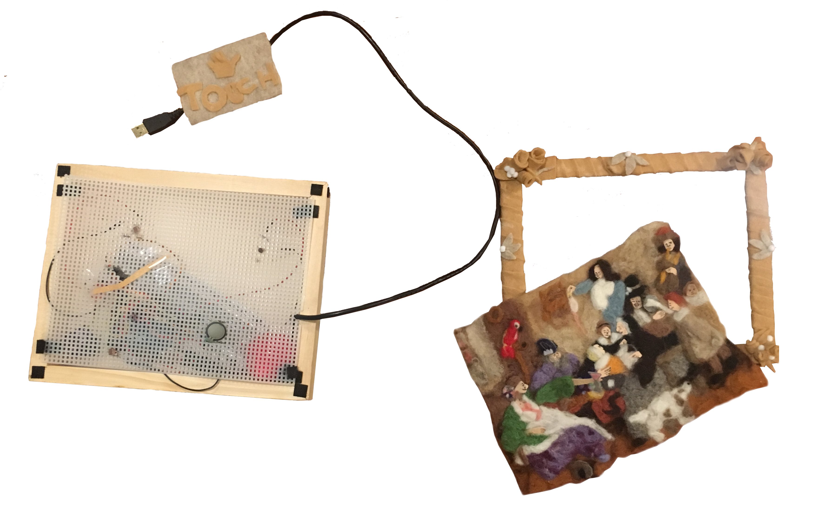
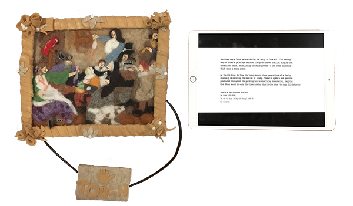

About
For my Introduction to Physical Computing final, I created a soft, felt interactive reproduction of Jan Steen's painting, "As the Old Sing, So Pipe the Young". Steen visualizes the Dutch proverb (the title), which means bad example leads to bad conduct through the scene of a lively baby's baptism. Rife with symbolism and dynamic movement, this painting's symbolic elements (the footwarmer, a blue hat, a pipe, and a dog) are highlighted by three liftable flaps and raised surfaces, which reveal informative text on an adjacent screen.
This project utilizes the Arduino and p5 library.
Process
Ideation
Despite being an art history major, I dreaded taking courses examining anytime prior to the 19th century. However, these classes became the most memorable as they enchanted me with rich narratives and dramaticism that rendered me emotional. My desire to share this excitement towards the subject led me to the idea of an interactive physical painting.
Objective:
To serve as a fun introduction to a subject (specifically 17th century Dutch Baroque paintings) that may seem uninteresting or intimidating.
With this in mind, I knew I wanted the final product to be:
- Soft & Touchable
- Why?
A majority of people's encounters with these types of paintings are within a museum. Thus, the interaction with most artworks is confined to observing and reading, which some people feel constrained or distanced by. A soft material would invite touch and remove the distance between the viewer and artwork. - Educational
- Why?
Initially, I gave myself the choice between the flaps triggering sounds or conjuring informative text. I chose to have informative text displayed on a screen separate from the painting to mimic way paintings are displayed in a museum and have users walk away with knowledge plus the experience! - A Loose Representation
- Why?
As I wanted my painting to simply be casual and introductory, I decided visually it would be a loose and less detailed interpretation of Steen's.
Components
Physical:
- 1 Wooden Box
- 1 Plastic Mesh
- 1 iPad
- Velcro Tape
- A LOT of felting wool
Electronic:
- Arduino UNO
- 3 Photoresistors
- 1 FSR (Force Sensitive Resistor)
- 1 Servo Motor
- p5 Library
Prototype Appearance
Soft Steen with iPad on right. The iPad screen displays a default landing page giving context to the painting and Jan Steen.
Interaction Walkthrough

The soft painting contains three flaps with triangular bits of velcro at the ends that represent the dog, pipe, and footwarmer. Underneath the flaps are photoresistors which detect whether it is exposed to light or not. When it is covered, the photoresistor sends serially to p5 to trigger the relevant informative text on the iPad screen. When all 3 flaps are covered, the woman's arm (servo motor) is triggered to lift for more wine and the iPad screen reveals a congratulatory message. The dog, which has a raised surface, has a force sensitive resistor underneath that is also triggers an informative when pressed down on.
The dog was given with a different sensor/interaction because I noticed my classmates always had a strong inclination to squeeze and press down on the needlefelted objects I'd bring in. Wanting to test both types interactions, I incorporated the pressing one to the dog because its significance was more relevant to Dutch art in general, rather than to the painting specifically.
Video demonstrating interaction shown below. (Does not show final interaction with iPad.)
Soft Steen Interaction Demo
User Test
Soft Steen debuted at the 2018 ITP Winter Show, which was a wonderful opportunity to user test with many, many different users and ended up serving as a major learning experience.
During the winter show, I noticed and learned:
- Users attempted to push and poke rather than use the flaps to trigger the interaction.
- Why?
I created the flaps to be more discreet to blend into the painting, which some people were unable to see. However, even people who were able to see the flaps appeared to be more tempted to press down, which may be due to the plushness of the material. Due to this inclination, the dog fact (triggered by the FSR) appeared often. - The photoresistor was not the ideal sensor for this project.
- Why?
The event triggers were dependent on the photoresistors, which indicated whether they were covered by the flaps or not. However, it quickly became unideal as surrounding visitors and viewers affected the amount of light it was sensing, which also made it difficult to reach the congratulatory message - Being explicit does not take away from exploration.
- Why?
Initially, my goal was to compel the user to approach the painting implicitly through the soft texture and setup rather than explicitly through signage to provide more of an exploratory aspect. However, I also reflected back on museums that simply had signage stating that visitors were allowed to interact with the pieces and decided to test an hour with the touch sign and an hour without. Despite some people being misled to touch the sign itself, the users who interacted with the piece when the sign was posted were actually able to become engaged more quickly than the users without, who spent more time reading the iPad text to fish for hints on the interaction. Although this point is reiterated often and is obvious to some, I experienced it firsthand when I witnessed the difference in user reaction. - Users were more inclined to explore and pay attention to the text more when I was not present.
- Why?
This point may be specific only to the context of the show context, as most exhibitors stood next to their projects to explain it and interact with guests. When I (somebody who is expected to be informed on the project) was near it, they expected me to explain it rather than read the screen as opposed to when I stood away from it. - They were surprised and entertained by the footwarmer fact!
- Despite some needed work on the interaction design, the educational aspect was successful!
Next Prototype (in progress)
Utilizing what I've learned from the Winter Show, I'm currently in the process of creating Soft Steen's next iteration which will be updated with:
- Larger scale (possible 18 x 21 inches)
- Pressable areas (no flaps!) The previous areas built with photoresistors will be replaced with FSRs, so everything is pressable! There will still be a servo motor
- Variety of materials to provide more differentiation. The pressable areas will be signified more distinctly by not only color but also a different material.